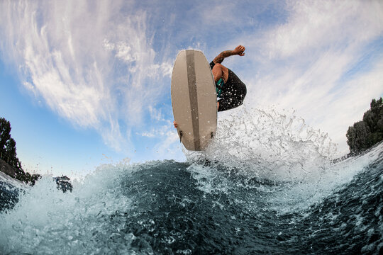

Hi! This is my personal website for DS class. My name is Alejandro Grillo and I like a lot of things! I’m a finance major as well as data science so it’s one of my biggest passions. I love to research high growth stocks that are volatile in today’s market. But what isn’t in this market haha! I also like to rock climb — it’s one of my biggest hobbies and something that helps me clear my head. When I climb, I focus on the next move and forget everything else. It’s a mix of strength, balance, and thinking ahead, which I really enjoy. I also like to do film and watch movies. I’ve always been drawn to storytelling, lighting, and how emotions are captured on screen. Film gives me a creative break from numbers and data, and I think that balance is really important. I like wake surfing the most as I feel over the moon every time I do the activity. I feel like nothing else matters and all I need to do is land my next trick. It really does destress me and I love it. Hopefully this tells you a bit about me!
